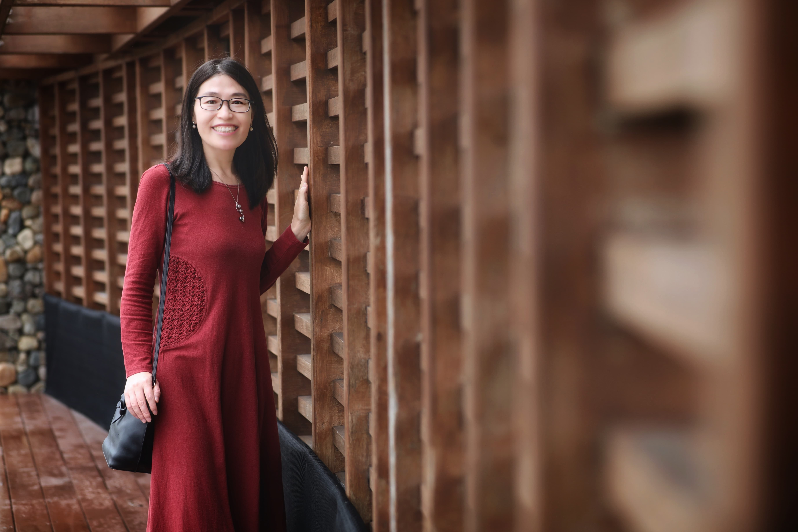

My journey in higher education, global programs, and educational innovation

I'm a higher education professional with more than 15 years of experience in teaching, international education, program management, and student support. I'm passionate about helping students navigate educational opportunities and make informed decisions about their academic futures.
My professional journey began in higher education, where I worked as a university professor, conducted academic research, and mentored students. Over the years, my interests expanded to international education, global partnerships, and professional program management.
Currently, I serve as Assistant Director of Global, Immersive and Professional Programs at the UNC Hussman School of Journalism and Media. I work with undergraduate students, international visiting scholars, and professional training programs, helping connect academic learning with global experiences.
I'm also pursuing a master's degree in Educational Innovation, Technology, and Entrepreneurship (MEITE) at UNC-Chapel Hill. My interests include artificial intelligence, higher education innovation, and developing practical tools that make university navigation and student advising more effective and personalized.
Outside of work and school, I enjoy hiking, exploring new places, staying active, and learning new things. I believe that curiosity and lifelong learning are essential to both personal and professional growth.
I'm pursuing a master's degree in Educational Innovation, Technology, and Entrepreneurship (MEITE) at UNC-Chapel Hill. My studies focus on educational innovation, technology, and entrepreneurship, with a particular interest in AI-powered solutions for higher education and student success.
I founded IvyElite, an education consulting venture focused on U.S. higher education planning, post-admission support, and personalized student advising. I develop services and resources that help students and families navigate the U.S. education system.
As Assistant Director of Global, Immersive and Professional Programs at the UNC Hussman School of Journalism and Media, I coordinate international education programs, advise undergraduate students, support visiting scholars, and organize professional learning experiences.
I worked as an Associate Professor at Beijing University of Posts and Telecommunications, where I taught undergraduate courses, mentored students, and conducted research in language education, academic writing, and intercultural communication. This experience shaped my commitment to education and student development.
Let's connect and explore opportunities in education, technology, and innovation.
Contact Me